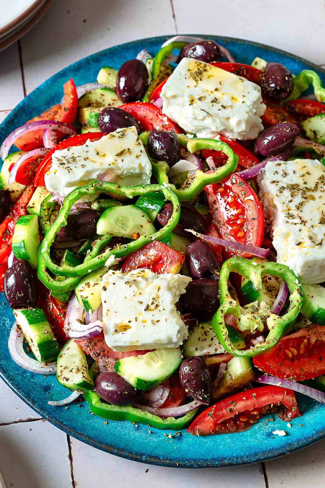

Greek Salad

Description
Make an authentic Greek salad, or Horiatiki, with this easy Greek salad recipe. Just a handful of fresh ingredients
and a no-fuss dressing of good olive oil and a splash of vinegar is all you need!
Ingredients
- Tomatoes: Use Roma tomatoes or vine-ripe tomatoes. They stay somewhat firm when they’re ripe, which works well
with the crunchy bell pepper and onion.
- Cucumber: I prefer English cucumbers as they tend to be sweeter. If standard slicing cucumbers are all that’s
available, make sure to fully peel their bitter waxy skin.
- Onion: Red onion is sweet and mild enough serve raw. To further take the edge off, a quick soak in ice water
and a dash of vinegar does the trick.
- Olives: Briny Kalamata olives are my favorite for a traditional Greek salad, but any high-quality olive you
have on hand will work.
- Bell pepper: Choose a firm and smooth green bell pepper, which is the only bell pepper that’s used in an
authentic Greek salad.
- Feta cheese: Use quality Greek sheep’s milk feta if it’s available to you. Opt for whole blocks of feta
packed in brine, as it not only boasts a better flavor but allows you to serve the large chunks of feta
that act as the centerpiece of a traditional Greek salad.
- Extra virgin olive oil: Use a full-flavor Greek olive oil.
- Red wine vinegar: Adds a dash of acidity to make an easy vinaigrette with no whisking necessary.
- Seasoning: This salad is seasoned simply with a sprinkle of kosher salt and dried oregano.
Steps
- Shock the onion (optional). Halve and thinly slice one red onion into half moons. If you’d like to mellow
its raw taste, fill a small bowl with ice water. Add about 1 teaspoon of red wine vinegar to the water, then
add the onion slices. Set aside to soak for 10 minutes or so while you prep the veggies.
- Prep the veggies. Slice 4 medium tomatoes into bite-sized pieces. Partially peel a cucumber into a stripe
pattern, then slice into half moons. Slice 1 green bell pepper into rings.
- Season. Place all the veggies in a large serving dish, along with a handful of pitted Kalamata olives.
Remove the onions from the ice water and add to the platter with the rest of the veggies. Sprinkle on 1
1/2 teaspoons of dried oregano and a pinch of kosher salt.
- Dress. Pour in 1/4 cup of extra virgin olive oil and 1-2 tablespoons of red wine vinegar.
Give everything a very gentle toss.
- Finish and serve. Break off or slice large pieces of feta and add to the top of the salad.
Finish with a final sprinkle of 1/4 tablespoon of oregano. Enjoy!